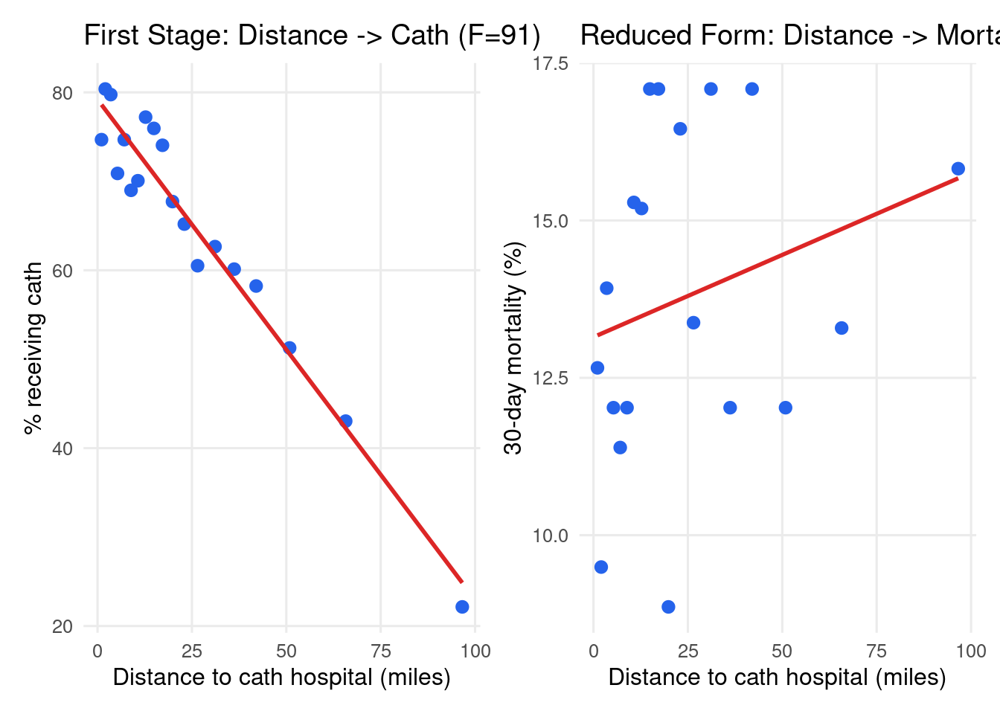
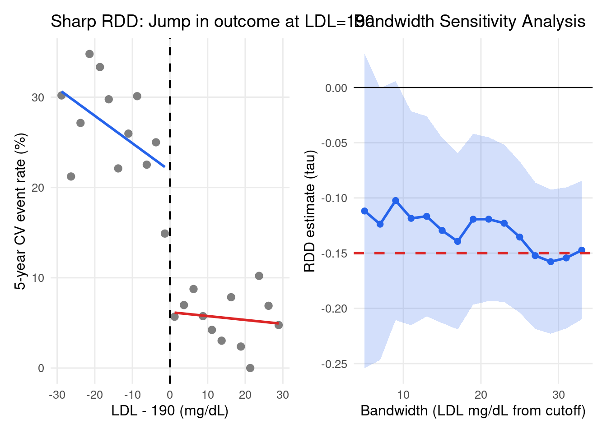
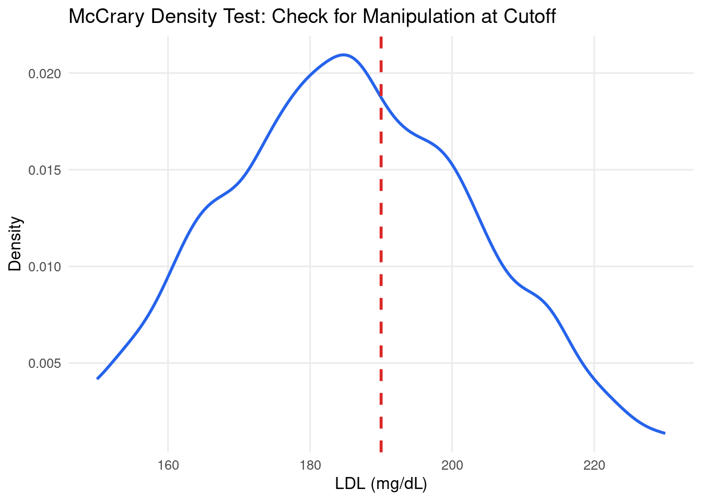

library(dplyr)
library(tidyr)
library(ggplot2)
library(broom)
library(tibble)
library(patchwork)
library(ivreg)
library(rdrobust)
theme_set(
theme_minimal(base_size = 12) +
theme(
panel.background = element_rect(fill = "white", colour = NA),
plot.background = element_rect(fill = "white", colour = NA),
panel.grid.minor = element_blank()
)
)
mod06_dir <- file.path(tempdir(), "mod06")
dir.create(mod06_dir, showWarnings = FALSE, recursive = TRUE)
logistic <- function(x) 1 / (1 + exp(-x))
set.seed(42)
Health Analytics with R · Module 06: Causal Inference in Health Research
Learning objectives - Understand the three IV assumptions: relevance, exclusion restriction, independence - Implement Two-Stage Least Squares (2SLS) from scratch - Apply RDD with local linear regression and optimal bandwidth selection - Test instrument strength with first-stage F-statistics - Build sharp and fuzzy RDD designs for healthcare cutoffs - Conduct sensitivity analyses (manipulation tests, bandwidth sensitivity)
Estimated time: 3 hours | Level: Advanced | Libraries: ivreg, rdrobust, stats, broom, dplyr, ggplot2
1. Setup
2. Instrumental Variables — Distance to Hospital
Scenario: Does receiving cardiac catheterisation cause lower mortality? - Problem: sicker patients are more likely to receive the procedure (confounding) - Instrument: Distance to nearest catheterisation-capable hospital - Relevance: Patients closer to cath-capable hospitals more likely to receive cath - Exclusion: Distance affects mortality ONLY through cath (not through other paths) - Independence: Distance is as-good-as-random (not correlated with patient severity)
2SLS Estimator: 1. First stage: Cath = alpha + gammaZ + Xdelta + v 2. Second stage: Mortality = beta0 + beta1Cath_hat + Xpi + e
# Simulate cardiac catheterisation data
set.seed(42)
N <- 3000
# Instrument: distance to nearest cath hospital (miles)
distance <- pmin(pmax(rexp(N, rate = 1 / 25), 1), 120)
# Unobserved severity (the confounder — related to treatment but not instrument)
severity <- rnorm(N, 0, 1)
# Treatment: cardiac catheterisation (influenced by both distance and severity)
cath_logit <- 1.5 - 0.03 * distance + 0.8 * severity + rnorm(N, 0, 0.5)
cath <- rbinom(N, 1, logistic(cath_logit))
# Covariates
age <- pmin(pmax(rnorm(N, 65, 12), 30), 90)
ami <- rbinom(N, 1, 0.6) # acute MI
# Outcome: 30-day mortality
TRUE_CATH_EFFECT <- -0.5 # log-odds cath reduces mortality
mortality_logit <- (-2.0 + TRUE_CATH_EFFECT * cath + 0.5 * severity
+ 0.02 * (age - 65) + 0.4 * ami + rnorm(N, 0, 0.4))
mortality <- rbinom(N, 1, logistic(mortality_logit))
df_iv <- tibble(
distance = distance,
severity = severity,
cath = cath,
age = age,
ami = ami,
mortality = mortality
)
cat(sprintf("N=%d | Cath rate=%.1f%% | Mortality=%.1f%%\n",
N, mean(cath) * 100, mean(mortality) * 100))N=3000 | Cath rate=65.1% | Mortality=13.8%cat("Cath rate by distance quartile:\n")Cath rate by distance quartile:bounds <- list(c(0, 25), c(25, 40), c(40, 60), c(60, 130))
for (q in seq_along(bounds)) {
lo <- bounds[[q]][1]; hi <- bounds[[q]][2]
sub <- df_iv |> filter(distance >= lo, distance < hi)
cat(sprintf(" Q%d (%d-%d miles): %.1f%% cath | %.1f%% mort\n",
q, lo, hi, mean(sub$cath) * 100, mean(sub$mortality) * 100))
} Q1 (0-25 miles): 73.0% cath | 13.5% mort
Q2 (25-40 miles): 61.9% cath | 14.2% mort
Q3 (40-60 miles): 53.4% cath | 14.1% mort
Q4 (60-130 miles): 30.6% cath | 14.9% mort# OLS (NAIVE — biased due to severity confounding)
model_ols <- lm(mortality ~ cath + age + ami, data = df_iv)
ols_coef <- unname(coef(model_ols)[["cath"]])
# First stage: Cath ~ Distance + Covariates (manual 2SLS)
fs_model <- lm(cath ~ distance + age + ami, data = df_iv)
fs_sum <- summary(fs_model)
f_stat <- unname(fs_sum$fstatistic["value"])
cath_hat <- fitted(fs_model)
cat(sprintf("First stage F-statistic: %.1f (%s instrument, threshold = 10)\n",
f_stat, if (f_stat > 10) "Strong" else "Weak"))First stage F-statistic: 90.7 (Strong instrument, threshold = 10)cat(sprintf("First stage coefficient on distance: %.4f (should be negative)\n",
coef(fs_model)[["distance"]]))First stage coefficient on distance: -0.0057 (should be negative)# Partial F on the excluded instrument (preferred strength diagnostic)
fs_reduced <- lm(cath ~ age + ami, data = df_iv)
partial_f <- anova(fs_reduced, fs_model)$F[2]
cat(sprintf("Partial F (distance | covariates): %.1f\n", partial_f))Partial F (distance | covariates): 272.1# Second stage: Mortality ~ Cath_hat + Covariates (manual 2SLS)
df_iv$cath_hat <- cath_hat
model_2sls <- lm(mortality ~ cath_hat + age + ami, data = df_iv)
iv_coef <- unname(coef(model_2sls)[["cath_hat"]])
# ivreg 2SLS (correct SEs; first-stage F via diagnostics)
iv_fit <- ivreg(mortality ~ cath + age + ami | distance + age + ami, data = df_iv)
iv_sum <- summary(iv_fit, diagnostics = TRUE)
ivreg_coef <- unname(coef(iv_fit)[["cath"]])
weak_f <- tryCatch(
unname(iv_sum$diagnostics["Weak instruments", "statistic"]),
error = function(e) NA_real_
)
cat(sprintf("\n%-20s %10s %10s %15s\n", "Method", "Coef", "OR", "Bias vs True"))
Method Coef OR Bias vs Truecat(paste(rep("-", 58), collapse = ""), "\n")---------------------------------------------------------- for (row in list(
list("OLS (naive)", ols_coef),
list("2SLS (manual)", iv_coef),
list("2SLS (ivreg)", ivreg_coef),
list("True", TRUE_CATH_EFFECT)
)) {
name <- row[[1]]; coef_val <- row[[2]]
bias <- if (name != "True") sprintf("%+.3f", coef_val - TRUE_CATH_EFFECT) else "—"
cat(sprintf(" %-18s %10.4f %10.4f %15s\n", name, coef_val, exp(coef_val), bias))
} OLS (naive) -0.0110 0.9891 +0.489
2SLS (manual) -0.0547 0.9467 +0.445
2SLS (ivreg) -0.0547 0.9467 +0.445
True -0.5000 0.6065 —if (!is.na(weak_f)) {
cat(sprintf("\nivreg weak-instrument F: %.1f (%s)\n",
weak_f, if (weak_f > 10) "Strong" else "Weak"))
}
ivreg weak-instrument F: 272.1 (Strong)# IV Visualisation
bins <- unique(quantile(distance, probs = seq(0, 1, length.out = 20)))
df_iv$dist_bin <- cut(distance, breaks = bins, include.lowest = TRUE)
bin_sum <- df_iv |>
filter(!is.na(dist_bin)) |>
group_by(dist_bin) |>
summarise(
dist_mean = mean(distance),
cath_pct = mean(cath) * 100,
mort_pct = mean(mortality) * 100,
.groups = "drop"
)
p_fs <- ggplot(bin_sum, aes(dist_mean, cath_pct)) +
geom_point(size = 2.5, colour = "#2563EB") +
geom_smooth(method = "lm", se = FALSE, colour = "#DC2626", linewidth = 1) +
labs(
x = "Distance to cath hospital (miles)",
y = "% receiving cath",
title = sprintf("First Stage: Distance -> Cath (F=%.0f)", f_stat)
)
p_rf <- ggplot(bin_sum, aes(dist_mean, mort_pct)) +
geom_point(size = 2.5, colour = "#2563EB") +
geom_smooth(method = "lm", se = FALSE, colour = "#DC2626", linewidth = 1) +
labs(
x = "Distance to cath hospital (miles)",
y = "30-day mortality (%)",
title = "Reduced Form: Distance -> Mortality"
)
p_iv <- p_fs + p_rf
print(p_iv)`geom_smooth()` using formula = 'y ~ x'
`geom_smooth()` using formula = 'y ~ x'
ggsave(file.path(mod06_dir, "iv_analysis.png"), p_iv,
width = 14, height = 5, dpi = 120)`geom_smooth()` using formula = 'y ~ x'
`geom_smooth()` using formula = 'y ~ x'3. Regression Discontinuity Design (RDD)
Scenario: Patients with LDL >= 190 mg/dL receive statin therapy per guidelines. Patients just below 190 do not.
The cutoff creates quasi-random assignment: patients just above and below 190 are similar on all characteristics, but differ in treatment probability.
Sharp RDD: Exact compliance at cutoff (everyone above gets treated)
Fuzzy RDD: Probability of treatment jumps at cutoff (imperfect compliance)
# Simulate LDL-based statin RDD
set.seed(42)
N_rdd <- 2000
CUTOFF <- 190 # LDL mg/dL guideline threshold
ldl <- pmin(pmax(rnorm(N_rdd, 185, 20), 130), 250)
above_cutoff <- as.integer(ldl >= CUTOFF)
severity_rdd <- rnorm(N_rdd, 0, 1)
# SHARP RDD: treatment perfectly determined by cutoff
statin_sharp <- above_cutoff
# FUZZY RDD: probability jumps at cutoff but not perfectly
statin_prob <- logistic(-2 + 5 * above_cutoff + 0.5 * rnorm(N_rdd, 0, 1))
statin_fuzzy <- rbinom(N_rdd, 1, statin_prob)
# Outcome: cardiovascular event (5 years)
TRUE_RDD_EFFECT <- -0.15 # risk difference
cv_prob <- 0.25 + TRUE_RDD_EFFECT * statin_sharp - 0.002 * (ldl - 190) + 0.05 * severity_rdd
cv_prob <- pmin(pmax(cv_prob, 0.01), 0.99)
cv_event <- rbinom(N_rdd, 1, cv_prob)
df_rdd <- tibble(
ldl = ldl,
above = above_cutoff,
statin_sharp = statin_sharp,
statin_fuzzy = statin_fuzzy,
cv_event = cv_event,
severity = severity_rdd
) |>
mutate(running = ldl - CUTOFF) # centered at cutoff
cat(sprintf("RDD dataset: N=%d\n", N_rdd))RDD dataset: N=2000cat(sprintf("Above cutoff: %.1f%%\n", mean(above_cutoff) * 100))Above cutoff: 39.0%cat(sprintf("Statin (sharp): %.1f%% | Statin (fuzzy): %.1f%%\n",
mean(statin_sharp) * 100, mean(statin_fuzzy) * 100))Statin (sharp): 39.0% | Statin (fuzzy): 45.1%cat(sprintf("CV event rate: %.1f%%\n", mean(cv_event) * 100))CV event rate: 18.2%# Sharp RDD estimation with local linear regression
BANDWIDTH <- 15 # optimal bandwidth (in practice: use data-driven methods)
rdd_estimate <- function(df, running_col, outcome_col, bw) {
in_bw <- df[abs(df[[running_col]]) <= bw, , drop = FALSE]
in_bw$D <- as.integer(in_bw[[running_col]] >= 0)
in_bw$r <- in_bw[[running_col]]
in_bw$r_interact <- in_bw$r * in_bw$D
model <- lm(as.formula(paste(outcome_col, "~ r + D + r_interact")), data = in_bw)
tid <- broom::tidy(model, conf.int = TRUE) |> filter(term == "D")
list(
tau = tid$estimate,
se = tid$std.error,
ci_lo = tid$conf.low,
ci_hi = tid$conf.high,
n = nrow(in_bw)
)
}
rdd_est <- rdd_estimate(df_rdd, "running", "cv_event", bw = BANDWIDTH)
cat(sprintf("Sharp RDD estimate (BW=%d):\n", BANDWIDTH))Sharp RDD estimate (BW=15):cat(sprintf(" tau (RD) = %.4f (true: %.4f)\n", rdd_est$tau, TRUE_RDD_EFFECT)) tau (RD) = -0.1295 (true: -0.1500)cat(sprintf(" SE = %.4f\n", rdd_est$se)) SE = 0.0428cat(sprintf(" 95%% CI : (%.4f, %.4f)\n", rdd_est$ci_lo, rdd_est$ci_hi)) 95% CI : (-0.2134, -0.0455)cat(sprintf(" N in BW : %d\n", rdd_est$n)) N in BW : 1083# rdrobust: data-driven bandwidth, robust bias-corrected inference
rd_fit <- rdrobust(y = df_rdd$cv_event, x = df_rdd$ldl, c = CUTOFF)
cat("\n--- rdrobust (sharp RDD, MSE-optimal bandwidth) ---\n")
--- rdrobust (sharp RDD, MSE-optimal bandwidth) ---print(summary(rd_fit))Call: rdrobust
Sharp RD estimates using local polynomial regression.
Number of Obs. 2000
BW type mserd
Kernel Triangular
VCE method NN
Left Right
Number of Obs. 1220 780
Eff. Number of Obs. 644 504
Order est. (p) 1 1
Order bias (q) 2 2
BW est. (h) 16.216 16.216
BW bias (b) 27.627 27.627
rho (h/b) 0.587 0.587
Unique Obs. 1216 779
=====================================================================
Point Robust Inference
Estimate z P>|z| [ 95% C.I. ]
---------------------------------------------------------------------
RD Effect -0.120 -2.331 0.020 [-0.207 , -0.018]
=====================================================================# Fuzzy RDD: treatment probability jumps at the cutoff
rd_fuzzy <- rdrobust(
y = df_rdd$cv_event, x = df_rdd$ldl, c = CUTOFF,
fuzzy = df_rdd$statin_fuzzy
)
cat("\n--- rdrobust (fuzzy RDD, statin_fuzzy) ---\n")
--- rdrobust (fuzzy RDD, statin_fuzzy) ---print(summary(rd_fuzzy))Call: rdrobust
Fuzzy RD estimates using local polynomial regression.
Number of Obs. 2000
BW type mserd
Kernel Triangular
VCE method NN
Left Right
Number of Obs. 1220 780
Eff. Number of Obs. 469 382
Order est. (p) 1 1
Order bias (q) 2 2
BW est. (h) 11.321 11.321
BW bias (b) 18.859 18.859
rho (h/b) 0.600 0.600
Unique Obs. 1216 779
First-stage estimates.
=====================================================================
Point Robust Inference
Estimate z P>|z| [ 95% C.I. ]
=====================================================================
Rd Effect 0.845 19.224 0.000 [0.773 , 0.949]
=====================================================================
Treatment effect estimates.
=====================================================================
Point Robust Inference
Estimate z P>|z| [ 95% C.I. ]
---------------------------------------------------------------------
RD Effect -0.133 -1.815 0.070 [-0.261 , 0.010]
=====================================================================fs_jump <- rdd_estimate(df_rdd, "running", "statin_fuzzy", bw = BANDWIDTH)
rf_jump <- rdd_estimate(df_rdd, "running", "cv_event", bw = BANDWIDTH)
fuzzy_wald <- rf_jump$tau / fs_jump$tau
cat(sprintf("\nFuzzy Wald (local linear, BW=%d): RF/FS = %.4f / %.4f = %.4f\n",
BANDWIDTH, rf_jump$tau, fs_jump$tau, fuzzy_wald))
Fuzzy Wald (local linear, BW=15): RF/FS = -0.1295 / 0.8048 = -0.1609# RDD plot
bins <- seq(-30, 30, length.out = 25)
df_rdd$rdd_bin <- cut(df_rdd$running, breaks = bins)
bin_rdd <- df_rdd |>
filter(!is.na(rdd_bin)) |>
group_by(rdd_bin) |>
summarise(
mean_x = mean(running),
mean_y = mean(cv_event) * 100,
.groups = "drop"
) |>
mutate(side = if_else(mean_x >= 0, "Above cutoff", "Below cutoff"))
p_rdd <- ggplot(bin_rdd, aes(mean_x, mean_y, colour = side)) +
geom_point(size = 2.5, colour = "gray50") +
geom_smooth(
data = filter(bin_rdd, mean_x < 0),
method = "lm", se = FALSE, colour = "#2563EB", linewidth = 1, inherit.aes = FALSE,
aes(mean_x, mean_y)
) +
geom_smooth(
data = filter(bin_rdd, mean_x > 0),
method = "lm", se = FALSE, colour = "#DC2626", linewidth = 1, inherit.aes = FALSE,
aes(mean_x, mean_y)
) +
geom_vline(xintercept = 0, colour = "black", linetype = "dashed", linewidth = 0.8) +
labs(
x = "LDL - 190 (mg/dL)",
y = "5-year CV event rate (%)",
title = "Sharp RDD: Jump in outcome at LDL=190",
colour = NULL
) +
theme(legend.position = "bottom")
# Bandwidth sensitivity
bws <- seq(5, 33, by = 2)
bw_results <- lapply(bws, function(b) rdd_estimate(df_rdd, "running", "cv_event", bw = b))
bw_df <- tibble(
bw = bws,
tau = vapply(bw_results, `[[`, numeric(1), "tau"),
se = vapply(bw_results, `[[`, numeric(1), "se")
) |>
mutate(ci_lo = tau - 1.96 * se, ci_hi = tau + 1.96 * se)
p_bw <- ggplot(bw_df, aes(bw, tau)) +
geom_ribbon(aes(ymin = ci_lo, ymax = ci_hi), fill = "#2563EB", alpha = 0.2) +
geom_line(colour = "#2563EB", linewidth = 1) +
geom_point(colour = "#2563EB", size = 2) +
geom_hline(yintercept = TRUE_RDD_EFFECT, colour = "#DC2626",
linetype = "dashed", linewidth = 1) +
geom_hline(yintercept = 0, colour = "black", linewidth = 0.4) +
labs(
x = "Bandwidth (LDL mg/dL from cutoff)",
y = "RDD estimate (tau)",
title = "Bandwidth Sensitivity Analysis"
)
p_rdd_all <- p_rdd + p_bw
print(p_rdd_all)`geom_smooth()` using formula = 'y ~ x'
`geom_smooth()` using formula = 'y ~ x'
ggsave(file.path(mod06_dir, "rdd_analysis.png"), p_rdd_all,
width = 14, height = 5, dpi = 120)`geom_smooth()` using formula = 'y ~ x'
`geom_smooth()` using formula = 'y ~ x'4. Knowledge Check
- First-stage F-statistic = 8.2. Is this instrument strong enough? What are the implications for your 2SLS estimates?
- The RDD estimate changes from -0.18 to -0.09 as bandwidth increases from 5 to 25. What does this pattern suggest?
- Patients might manipulate their LDL measurement to stay below 190 to avoid statins. How would you test for this?
- What does the LATE (Local Average Treatment Effect) represent in the cardiac catheterisation IV analysis?
- Implement a density test (McCrary test) to check for manipulation at the LDL cutoff.
# Exercise 5 — McCrary density test (simplified)
# Test: Is there an unusual density jump at the cutoff?
# If patients manipulate, we'd see excess density just below 190
dens <- density(df_rdd$ldl, bw = 3, from = 150, to = 230, n = 200)
dens_df <- tibble(ldl = dens$x, density = dens$y)
p_mccrary <- ggplot(dens_df, aes(ldl, density)) +
geom_line(colour = "#2563EB", linewidth = 1) +
geom_vline(xintercept = CUTOFF, colour = "#DC2626",
linetype = "dashed", linewidth = 1) +
labs(
x = "LDL (mg/dL)",
y = "Density",
title = "McCrary Density Test: Check for Manipulation at Cutoff"
)
print(p_mccrary)
# Local density comparison just left and right of cutoff
eps <- 8 # window around cutoff
left_density <- mean(df_rdd$ldl >= CUTOFF - eps & df_rdd$ldl < CUTOFF)
right_density <- mean(df_rdd$ldl >= CUTOFF & df_rdd$ldl < CUTOFF + eps)
density_ratio <- right_density / left_density
cat(sprintf("Density just left of cutoff (%d-%d): %.4f\n",
CUTOFF - eps, CUTOFF, left_density))Density just left of cutoff (182-190): 0.1685cat(sprintf("Density just right of cutoff (%d-%d): %.4f\n",
CUTOFF, CUTOFF + eps, right_density))Density just right of cutoff (190-198): 0.1350cat(sprintf("Density ratio (right/left): %.3f (should be ~1.0 if no manipulation)\n",
density_ratio))Density ratio (right/left): 0.801 (should be ~1.0 if no manipulation)cat(sprintf("Interpretation: %s\n",
if (density_ratio > 0.8 && density_ratio < 1.25)
"No evidence of manipulation" else "Potential manipulation!"))Interpretation: No evidence of manipulationNext -> NB-06: G-Computation & TMLE